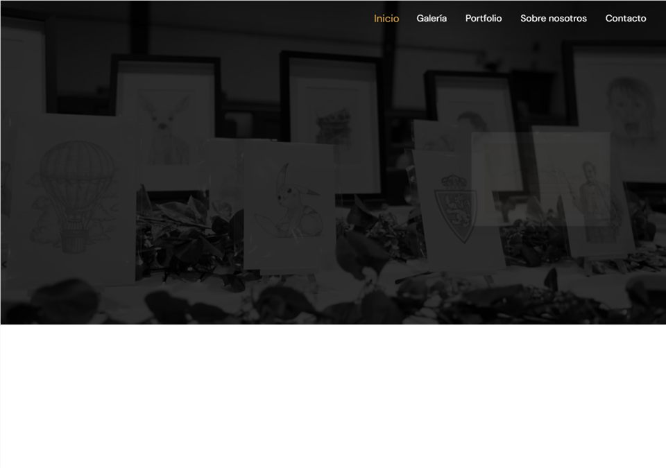

Desarrollo web
a medida
Webs corporativas e interfaces adaptadas a lo que necesita tu proyecto, con trabajo en frontend y backend.
Cuéntame tu ideaDESARROLLO WEB · WORDPRESS · SOPORTE INFORMÁTICO
Desarrollo webs, tiendas online e integraciones a medida. También puedo ayudarte con soporte técnico e informática, desde la puesta a punto hasta el mantenimiento.
Frontend, backend y una visión completa
de lo que necesita tu web.
Una buena idea.
Una web a su altura.
web + datos + tu negocioExperiencia en proyectos de
EN QUÉ PUEDO AYUDARTE
Una web que presente tu negocio.
Una tienda que puedas gestionar.
Una integración que conecte tus herramientas.
Un equipo que siga funcionando.
Webs corporativas e interfaces adaptadas a lo que necesita tu proyecto, con trabajo en frontend y backend.
Cuéntame tu ideaWebs y catálogos que puedas actualizar, funcionalidades propias y tiendas online preparadas para tu forma de trabajar.
Hablemos de tu webConexión con APIs, formularios y bases de datos. Mejoras y soporte para que tu web pueda seguir evolucionando.
Veamos qué necesitasReparación, configuración y puesta a punto de equipos, sistemas, redes y software, con asistencia remota o presencial.
Necesito soporteDESARROLLO + SOPORTE
Además de crear webs, ofrezco soporte informático para particulares, autónomos y pequeños negocios: equipos, sistemas, redes, software y mantenimiento diario.
Reparación y configuración de ordenadores, impresoras y programas, con asistencia remota o presencial.
REMOTO / PRESENCIALFormateo, puesta a punto, limpieza, copias de seguridad y revisiones para trabajar con tranquilidad.
EQUIPOS Y SISTEMASWindows, Linux, routers, Wi-Fi, redes locales y montaje o gestión de servidores.
REDES / SERVIDORESWordPress, Shopify, mantenimiento web, SEO y apoyo administrativo o de facturación.
WEB / NEGOCIOAtención freelance por horas o por proyecto completo, con soporte remoto o presencial en Zaragoza y Aragón.
TECNOLOGÍAS Y HERRAMIENTAS
PROYECTOS PROPIOS
Webs corporativas, tiendas online y soporte técnico presentados como servicios y proyectos que puedo adaptar a distintos tipos de negocio.
Una marca.
Una web clara.
WEBS CORPORATIVAS / SERVICIO PROPIO
Creación y mantenimiento de webs para empresas, autónomos y proyectos de distintos sectores, con estructura clara y gestión sencilla.

Captura de referencia del proyectoECOMMERCE / ARTE
Catálogo de cuadros y dibujos, presentación visual de obra y base para gestionar productos e inventario.
Una web para
presentar servicios,
galería y contacto.
WEB PARA PROFESIONALES / EVENTOS
Landing orientada a profesionales de eventos que necesitan presentar servicios, trabajos, galería y contacto directo de forma clara.
> revisar sistema
> actualizar equipo
> listo para trabajarSOPORTE TÉCNICO / MANTENIMIENTO
Soporte para equipos, sistemas, redes y software, con asistencia remota o presencial según la necesidad.
CÓMO TRABAJO
Un proyecto claro empieza por una conversación. Estas son las etapas que propongo para dar forma a tu web.
Empecemos por tu ideaQué necesita tu negocio, quién usará la web y qué debe poder hacer. Definir alcance y prioridades.
Dar forma a la experiencia y construir sus funcionalidades, revisando contigo las decisiones del proyecto.
Revisar el funcionamiento, preparar la publicación y acordar el soporte que necesites después.
SOBRE MÍ
Desarrollador web, técnico informático y autónomo freelance. Ayudo a empresas y profesionales a resolver sus necesidades digitales: webs corporativas para distintos sectores, WordPress, ecommerce, soporte técnico, hardware, software, redes y servidores.
Desde enero de 2026 colaboro con Java Innovación como programador, administrativo y técnico informático. Trabajo por horas o por proyecto completo, según el alcance y las prioridades de cada cliente.
Mi experiencia reúne desarrollo web, mantenimiento, plataformas internas y asistencia informática. He trabajado en equipos como Flat 101, Proun, Embou y PortalClub, y en diversos equipos y proyectos digitales de sectores distintos, combinando desarrollo web, mantenimiento, plataformas internas y asistencia informática.
Escríbeme por WhatsAppTU PRÓXIMO PROYECTO
Cuéntame qué necesitas, cómo es tu negocio
y en qué punto está tu proyecto.